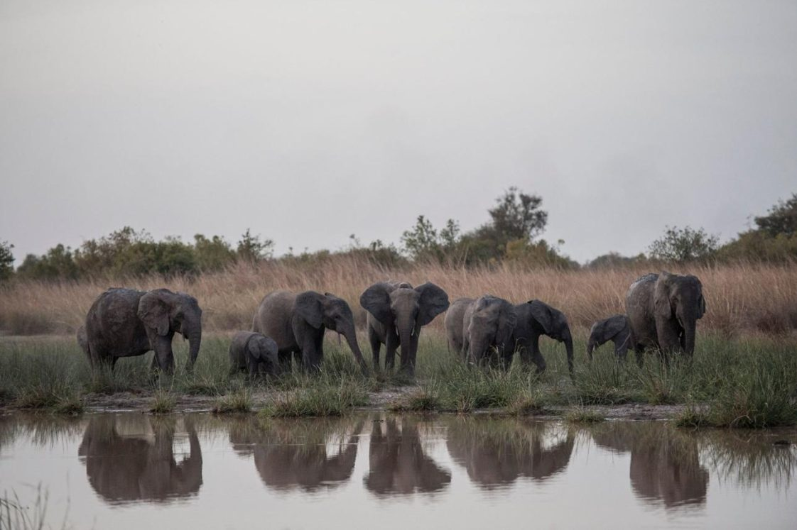
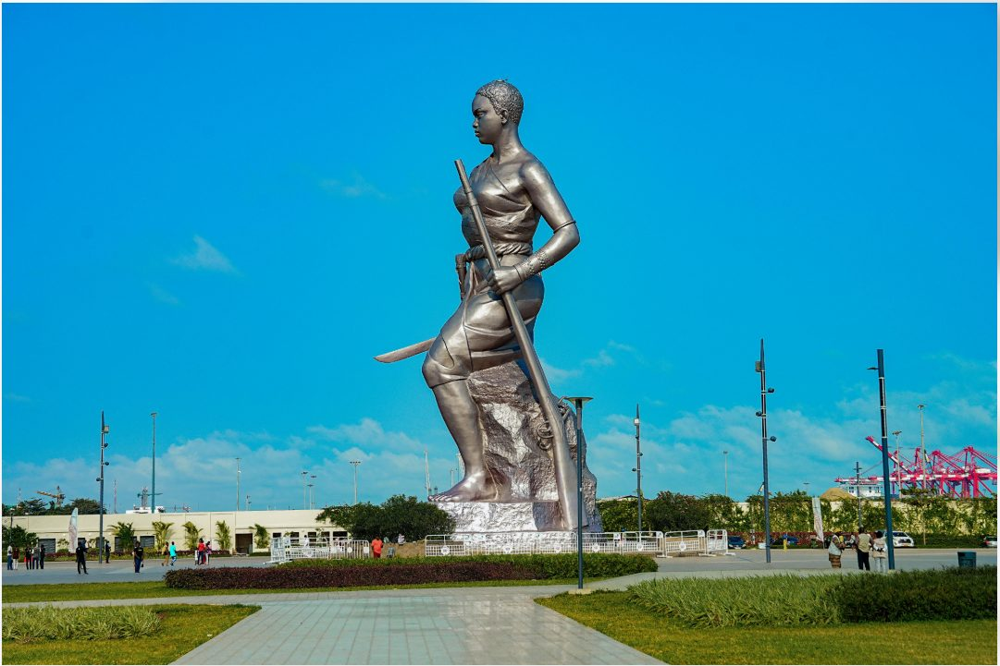
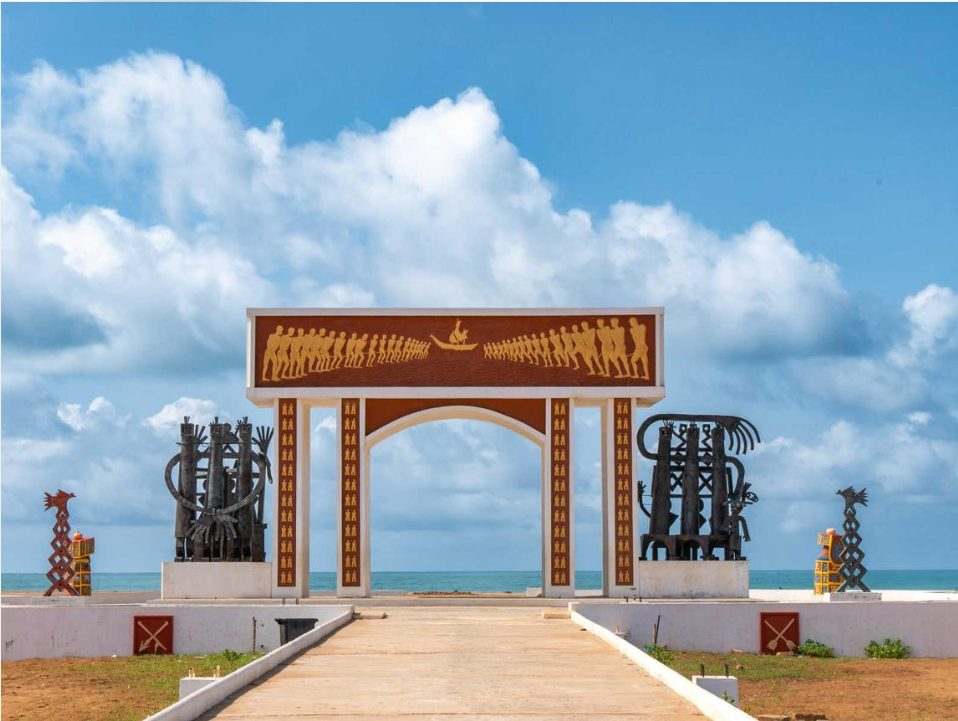
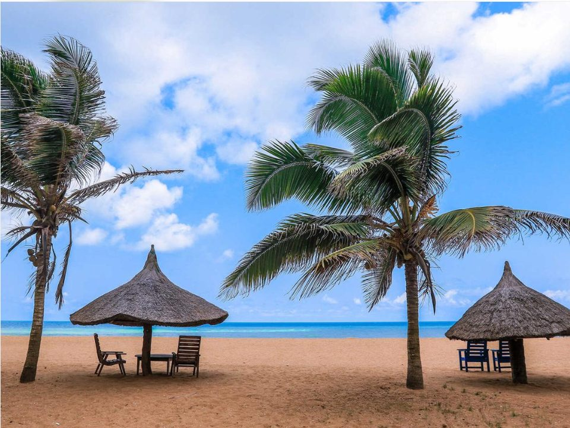
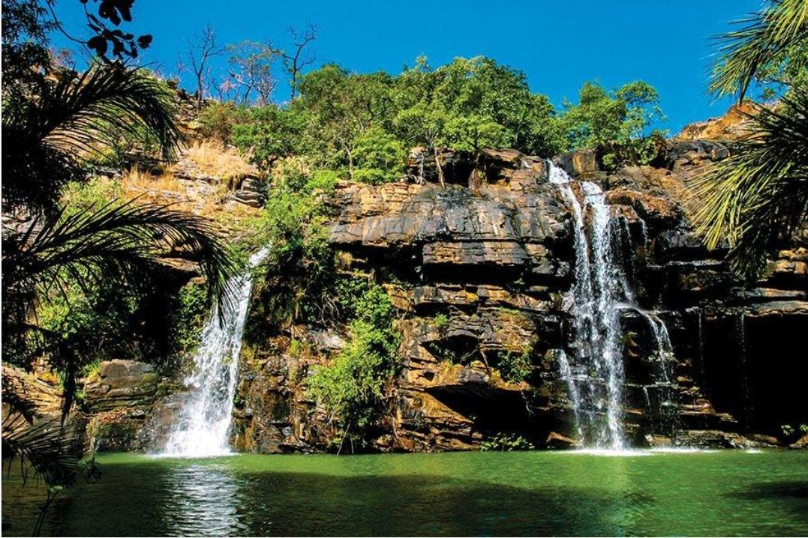
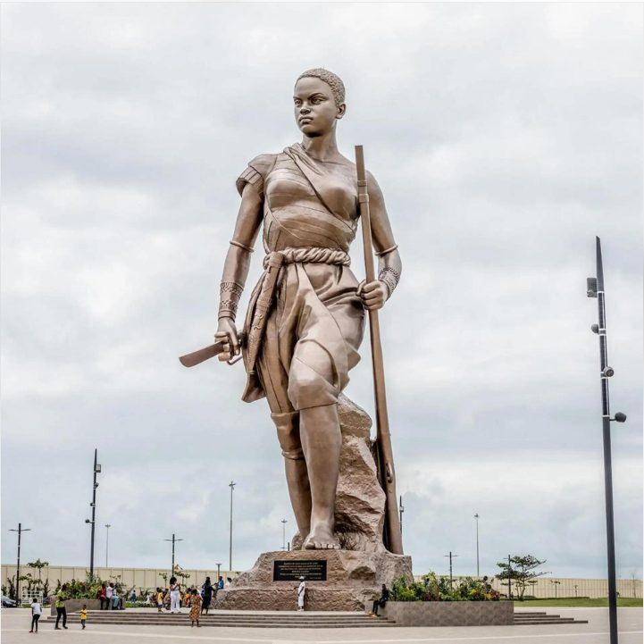

Nature
Parc national de la Pendjari
Éléphants, buffles et hippopotames dans l'une des plus belles réserves d'Afrique de l'Ouest.
Au cœur de l'Afrique de l'Ouest
Des guerrières du Danxomè aux villages sur pilotis, des palais d'Abomey aux savanes de la Pendjari : un petit pays aux histoires immenses.

Du sable de l'Atlantique aux réserves du nord, le Bénin réunit des univers très différents : des villes chargées d'histoire, des lagunes habitées, des fêtes vivantes et une cuisine généreuse. Chaque région a sa propre ambiance.
Le royaume de Danxomè, que l'on appelle aussi le Dahomey, possédait une garde royale composée de femmes : les Agoodjiés, ou Minons.
Entraînées et disciplinées, elles faisaient partie de l'armée du royaume. Les récits européens les ont surnommées « Amazones ».
À Cotonou, le Monument Amazone leur rend hommage et fait de cette mémoire un symbole de fierté pour tout le pays.
Cherchez une destination, choisissez une ambiance et gardez vos coups de cœur en favoris.

Éléphants, buffles et hippopotames dans l'une des plus belles réserves d'Afrique de l'Ouest.

Berceau du vodun, où la Route des Esclaves s'achève à la Porte du Non-Retour.

Cocotiers, sable clair et paillotes, entre l'Atlantique et le fleuve Mono.

Des chutes d'eau au milieu des rochers et de la végétation, dans le nord du pays.

La grande ville du littoral, où le Monument Amazone veille sur l'esplanade.
Aucune destination ne correspond à votre recherche.
Astuce : touchez le cœur d'une carte pour garder une destination en favori sur cet appareil.
Parcourez le pays en images : des rues de Cotonou aux reliefs du Nord, des lagunes au patrimoine vivant.
26 photographies
Un symbole de courage et de mémoire, au bord du boulevard de la Marina.
Une vue aérienne de l'esplanade, du boulevard de la Marina et de l'océan.
Photo : Présidence du BéninUne statue équestre en hommage à une figure de l'histoire béninoise.
Une façade moderne qui accueille les voyageurs à leur arrivée.
Des collines verdoyantes à perte de vue.
Une route qui serpente entre les falaises rocheuses.
Une chute d'eau au milieu des palmiers.
Une eau claire au pied d'une falaise.
Une famille d'éléphants au bord de l'eau.
Des cases au toit de paille, entourées d'arbres.
Là où le fleuve rencontre l'océan.
Un village de pêcheurs sur une langue de sable.
Des cocotiers et des paillotes face à la mer.
Un grand mur peint, plein de visages et de couleurs.
Un peintre termine sa fresque, pinceau à la main.
Des visages peints devant de grands silos.
Un mémorial face à l'océan, lieu de mémoire.
Un espace commémoratif consacré au souvenir.
Une architecture institutionnelle contemporaine.
Une composition artistique aux motifs expressifs.
Une vue en contre-plongée du monument emblématique.
Les vagues et la lumière composent un paysage apaisant.
Un lieu de rassemblement pour les événements culturels.
Des motifs et des couleurs associés aux traditions vodun.
Une adresse hôtelière dans le paysage urbain.
Une vue sur la piscine et l'espace hôtelier.
Aucune photo ne correspond à cette recherche.
Sélectionne une photo pour l'agrandir. Les cœurs permettent d'enregistrer tes images préférées sur cet appareil.
Quelques vidéos pour découvrir les paysages, les monuments et les villes du pays autrement.
Une présentation du Palais de la Marina, proposée dans la sélection de vidéos du projet.
Regarder sur YouTube ↗Un petit documentaire consacré aux paysages et aux reliefs du septentrion béninois.
Regarder sur YouTube ↗Une découverte de la ville nichée au pied de la chaîne de l'Atacora, dans le nord-ouest du Bénin.
Regarder sur YouTube ↗Une présentation vidéo d'un des grands axes du front de mer de Cotonou.
Regarder sur YouTube ↗ Voir la source officielle ↗La vidéo partagée dans le projet, avec des vues des paysages du nord du Bénin autour de Papara.
Ouvrir sur Facebook ↗Les vidéos sont hébergées par YouTube et Facebook. Leur lecture dépend de la connexion Internet et des paramètres de partage de leurs auteurs. Aucun son ni lecture automatique n'est lancé à l'ouverture de la page.
Le Bénin est le berceau du vodun. Chaque 10 janvier, la fête nationale rassemble tambours, chants et costumes.
Les palais d'Abomey racontent la puissance du royaume du Dahomey et de ses souverains.
Musique, danse, tissus appliqués et sculptures : les artistes racontent leur histoire avec leurs mains.
Une cuisine généreuse, des produits locaux et des recettes qui se transmettent.
Du poisson frais, une sauce gombo onctueuse et de la pâte de manioc : un repas simple et généreux.
Une semoule de manioc légère, appréciée dans plusieurs pays d'Afrique de l'Ouest.
Poissons et viandes grillés, relevés de piment : le plat des soirées entre amis.
Cinq questions sur les lieux et le patrimoine du pays.
Chaque lieu a une histoire, chaque rencontre une découverte.
Recommencer l'exploration